Modeling an Automatic Transmission Controller
In this demo, Simulink® is used to model an automotive drivetrain. Stateflow® enhances the Simulink model with its representation of the transmission control logic. Simulink provides a powerful environment for the modeling and simulation of dynamic systems and processes. In many systems, though, supervisory functions like changing modes or invoking new gain schedules must respond to events that may occur and conditions that develop over time. As a result, the environment requires a language capable of managing these multiple modes and developing conditions. In the following example, Stateflow demonstrates its strength in this capacity by performing the function of gear selection in an automatic transmission. This function is combined with the drivetrain dynamics in a natural and intuitive manner by incorporating a Stateflow block in the Simulink block diagram.
Contents
Analysis and Physics
Figure 1 shows the power flow in a typical automotive drivetrain. Nonlinear ordinary differential equations model the engine, four-speed automatic transmission, and vehicle. The model discussed in this demo directly implements the blocks from Figure 1 as modular Simulink subsystems. On the other hand, the logic and decisions made in the Transmission Control Unit (TCU) do not lend themselves to well-formulated equations. TCU is better suited for a Stateflow representation. Stateflow monitors the events which correspond to important relationships within the system and takes the appropriate action as they occur.
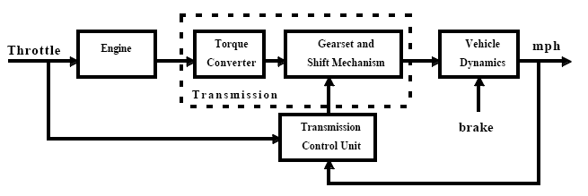
Figure 1: Generic block diagram for a drivetrain system
The throttle opening is one of the inputs to the engine. The engine is connected to the impeller of the torque converter which couples it to the transmission (see Equation 1).
Equation 1
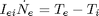
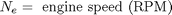
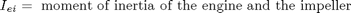
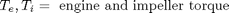
The input-output characteristics of the torque converter can be expressed as functions of the engine speed and the turbine speed. In this example, the direction of power flow is always assumed to be from the impeller to the turbine (see Equation 2).
Equation 2
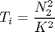
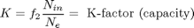
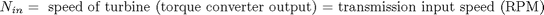
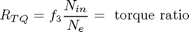
The transmission model is implemented via static gear ratios, assuming small shift times (see Equation 3).
Equation 3
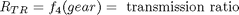
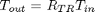
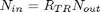
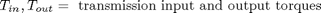
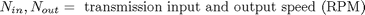
The final drive, inertia, and a dynamically varying load constitute the vehicle dynamics (see Equation 4).
Equation 4
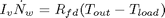
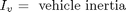
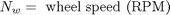
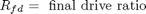
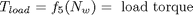
The load torque includes both the road load and brake torque. The road load is the sum of frictional and aerodynamic losses (see Equation 5).
Equation 5
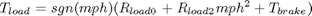
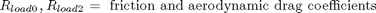
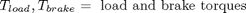
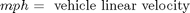
The model programs the shift points for the transmission according to the schedule shown in Figure 2. For a given throttle in a given gear, there is a unique vehicle speed at which an upshift takes place. The simulation operates similarly for a downshift.
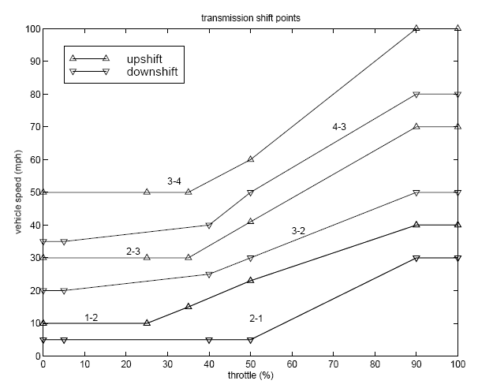
Figure 2: Shift schedule
Modeling
To open this model type sldemo_autotrans in MATLAB® terminal. Initial conditions are loaded to the Model Workspace from the sldemo_autotrans_data.mat binary file.
The top-level diagram of the model is shown in Figure 3. To run the simulation, press the Play button on the toolbar in the model window. Note that the model logs relevant data to MATLAB Workspace in a data structure called sldemo_autotrans_output. Logged signals have a blue indicator (see Figure 3). After you run the simulation, you can view the components of the data structure by typing sldemo_autotrans_output in MATLAB Command Window.
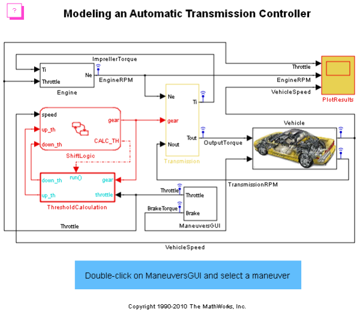 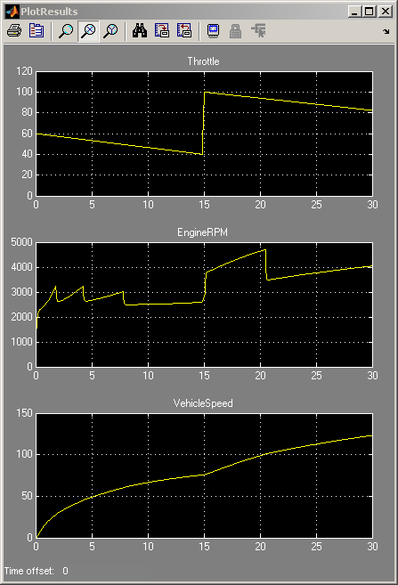Figure 3: Model diagram and sample simulation results (passing maneuver)
Modeling
The Simulink model shown in Figure 3 is composed of modules which represent the engine, transmission, and the vehicle, with an additional shift logic block to control the transmission ratio. User inputs to the model are in the form of throttle (given in percent) and brake torque (given in ft-lb). The user inputs throttle and brake torques using the ManeuversGUI interface.
The Engine subsystem consists of a two-dimensional table that interpolates engine torque versus throttle and engine speed. Figure 4 shows the composite Engine subsystem. Double click on this subsystem in the model to view its structure.
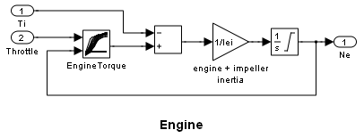Figure 4: Engine subsystem
The TorqueConverter and the TransmissionRatio blocks make up the Transmission subsystem, as shown in Figure 5. Double click on the Transmission subsystem in the model window to view its components.
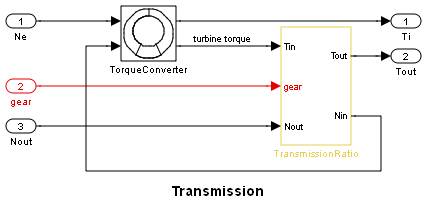Figure 5: Transmission subsystem
The TorqueConverter is a masked subsystem, which implements Equation 2. To open this subsystem, right click on it and select "Look Under Mask" from the drop-down menu. The mask requires a vector of speed ratios ( Nin/Ne ) and vectors of K-factor (f2) and torque ratio (f3). Figure 6 shows the implementation of the TorqueConverter subsystem.
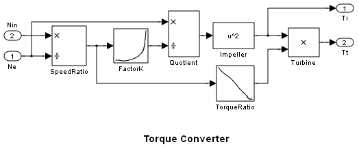Figure 6: Torque converter subsystem
The transmission ratio block determines the ratio shown in Table 1 and computes the transmission output torque and input speed, as indicated in Equation 3. Figure 7 shows the block diagram for the subsystem that realizes this ratio in torque and speed.
Table 1: Transmission gear ratios
gear Rtr = Nin/Ne 1 2.393 2 1.450 3 1.000 4 0.677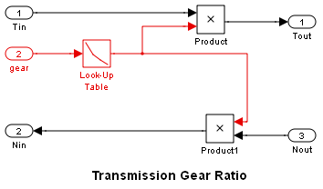
Figure 7: Transmission gear ratio subsystem
The Stateflow block labeled ShiftLogic implements gear selection for the transmission. Double click on ShiftLogic in the model window to open the Stateflow diagram. The Model Explorer is utilized to define the inputs as throttle and vehicle speed and the output as the desired gear number. Two dashed AND states keep track of the gear state and the state of the gear selection process. The overall chart is executed as a discrete-time system, sampled every 40 milliseconds. The Stateflow diagram shown in Figure 8 illustrates the functionality of the block.
Figure 8: Stateflow diagram of the transmission shift logic
The shift logic behavior can be observed during simulation by enabling animation in the Stateflow debugger. The selection_state (always active) begins by performing the computations indicated in its during function. The model computes the upshift and downshift speed thresholds as a function of the instantaneous values of gear and throttle. While in steady_state, the model compares these values to the present vehicle speed to determine if a shift is required. If so, it enters one of the confirm states (upshifting or downshifting), which records the time of entry.
If the vehicle speed no longer satisfies the shift condition, while in the confirm state, the model ignores the shift and it transitions back to steady_state. This prevents extraneous shifts due to noise conditions. If the shift condition remains valid for a duration of TWAIT ticks, the model transitions through the lower junction and, depending on the current gear, it broadcasts one of the shift events. Subsequently, the model again activates steady_state after a transition through one of the central junctions. The shift event, which is broadcast to the gear_selection state, activates a transition to the appropriate new gear.
For example, if the vehicle is moving along in second gear with 25% throttle, the state second is active within gear_state, and steady_state is active in the selection_state. The during function of the latter, finds that an upshift should take place when the vehicle exceeds 30 mph. At the moment this becomes true, the model enters the upshifting state. While in this state, if the vehicle speed remains above 30 mph for TWAIT ticks, the model satisfies the transition condition leading down to the lower right junction. This also satisfies the condition [|gear == 2|] on the transition leading from here to steady_state, so the model now takes the overall transition from upshifting to steady_state and broadcasts the event UP as a transition action. Consequently, the transition from second to third is taken in gear_state which completes the shift logic.
The Vehicle subsystem (Figure 9) uses the net torque to compute the acceleration and integrate it to compute the vehicle speed, per Equation 4 and Equation 5. The Vehicle subsystem is masked. To see the structure of the Vehicle block, right click on it and select "Look Under Mask" from the drop-down menu. The parameters entered in the mask menu are the final drive ratio, the polynomial coefficients for drag friction and aerodynamic drag, the wheel radius, vehicle inertia, and initial transmission output speed.
Figure 9: Vehicle subsystem (masked)
Results
The engine torque map, and torque converter characteristics used in the simulations are shown in Figure 10 and Figure 11.
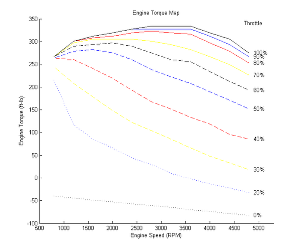Figure 10: Engine torque map
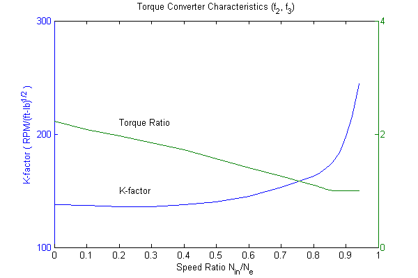Figure 11: Torque converter characteristics (see Figure 5 and Equation 2)
The first simulation (passing maneuver) uses the throttle schedule given in Table 2 (this data is interpolated linearly).
Table 2: Throttle schedule for first simulation (passing maneuver)
Time (sec) Throttle (%) 0 60 14.9 40 15 100 100 0 200 0
The first column corresponds to time; the second column corresponds to throttle opening in percent. In this case no brake is applied (brake torque is zero). The vehicle speed starts at zero and the engine at 1000 RPM. Figure 12 shows the plot for the baseline results, using the default parameters. As the driver steps to 60% throttle at t=0, the engine immediately responds by more than doubling its speed. This brings about a low speed ratio across the torque converter and, hence, a large torque ratio (see Figure 6 and Figure 11. The vehicle accelerates quickly (no tire slip is modeled) and both the engine and the vehicle gain speed until about t = 2 sec, at which time a 1-2 upshift occurs. The engine speed characteristically drops abruptly, then resumes its acceleration. The 2-3 and 3-4 upshifts take place at about four and eight seconds, respectively. Notice that the vehicle speed remains much smoother due to its large inertia.
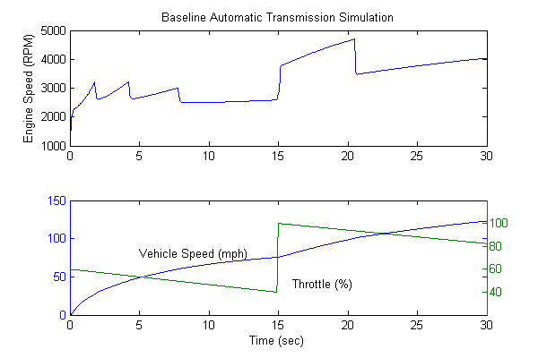Figure 12: Passing maneuver simulation time history
At t=15sec, the driver steps the throttle to 100% as might be typical of a passing maneuver. The transmission downshifts to third gear and the engine jumps from about 2600 RPM to about 3700 RPM. The engine torque thus increases somewhat, as well as the mechanical advantage of the transmission. With continued heavy throttle, the vehicle accelerates to about 100 mph and then shifts into overdrive at about t = 21 sec. The vehicle cruises along in fourth gear for the remainder of the simulation. Double click on the ManeuversGUI block and use the graphical interface to vary the throttle and brake history.
Closing the Model
Close the model, clear generated data.
Conclusions
One can easily enhance this basic system in a modular manner, for example, by replacing the engine or transmission with a more complex model. We can thus build up large systems within this structure via step-wise refinement. The seamless integration of Stateflow control logic with Simulink signal processing enables the construction of a model which is both efficient and visually intuitive.